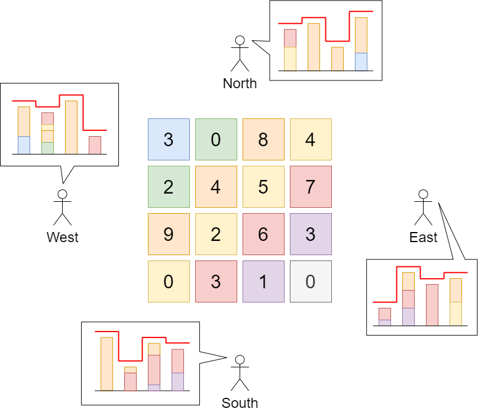

There is a city composed of n x n blocks, where each block contains a single building shaped like a vertical square prism. You are given a 0-indexed n x n integer matrix grid where grid[r][c] represents the height of the building located in the block at row r and column c.
A city's skyline is the the outer contour formed by all the building when viewing the side of the city from a distance. The skyline from each cardinal direction north, east, south, and west may be different.
We are allowed to increase the height of any number of buildings by any amount (the amount can be different per building). The height of a 0-height building can also be increased. However, increasing the height of a building should not affect the city's skyline from any cardinal direction.
Return the maximum total sum that the height of the buildings can be increased by without changing the city's skyline from any cardinal direction.
Example 1:
Input: grid = [[3,0,8,4],[2,4,5,7],[9,2,6,3],[0,3,1,0]]
Output: 35
Explanation: The building heights are shown in the center of the above image.
The skylines when viewed from each cardinal direction are drawn in red.
The grid after increasing the height of buildings without affecting skylines is:
gridNew = [ [8, 4, 8, 7],
[7, 4, 7, 7],
[9, 4, 8, 7],
[3, 3, 3, 3] ]
Example 2:
Input: grid = [[0,0,0],[0,0,0],[0,0,0]] Output: 0 Explanation: Increasing the height of any building will result in the skyline changing.
Constraints:
n == grid.lengthn == grid[r].length2 <= n <= 500 <= grid[r][c] <= 100